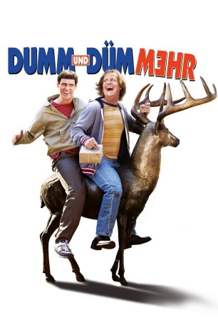

gesehen am 30.08.2016
gesehen am 30.08.2016Alternativ: Dumb and Dumber To gesehen am 30.08.2016
 
 IMDB-Wertung: 5.6 / 10
IMDB-Wertung: 5.6 / 10  Metascore:
Metascore: 
Die leicht debilen Freunde Lloyd Christmas und Harry Dune sind in die Jahre gekommen. Als Harry ein schweres Nierenproblem plagt und auf ein Spenderorgan angewiesen ist, müssen sich die Kumpels auf die Suche nach einem geeigneten Spender machen – währenddessen machen sie eine unerwartete Entdeckung: In einer Nachricht erfährt Harry, dass er vor Jahren Vater geworden ist. Über Umwege bringen sie in Erfahrung, dass Harry mittlerweile eine erwachsene Tochter hat, die seine letzte Rettung vor den Folgen seiner schweren Nieren-Erkrankung sein könnte – und so wird das Hunde-Mobil auf Vordermann gebracht und eine wahnwitziger Road Trip beginnt, auf dem Harry seine Tochter finden möchte, um sein Leben zu retten, und Lloyd, um Harrys attraktive Tochter für sich zu gewinnen…
Jahr: 2014
Dauer: 109 Minuten
FSK: 12
Land: USA Studio: Universal PicturesTonspuren: DTS - ,
Untertitel: Deutsch,
Auflösung: 1080p (1920x1040) Größe: 7116 MB
Genre: Komödie
Regisseur:  Bobby Farrelly, Peter Farrelly
Bobby Farrelly, Peter Farrelly
Drehbuch: Sean Anders, John Morris, Peter Farrelly, Bobby Farrelly, Bennett Yellin
Soundtrack: Empire of the Sun
Darsteller:
 Jim Carrey als Lloyd
Jim Carrey als Lloyd Jeff Daniels als Harry
Jeff Daniels als Harry Rob Riggle als Travis / Captain Lippincott
Rob Riggle als Travis / Captain Lippincott Laurie Holden als Adele
Laurie Holden als Adele Steve Tom als Dr. Pinchelow
Steve Tom als Dr. Pinchelow Don Lake als Dr. Meldmann
Don Lake als Dr. Meldmann Patricia French als Ms. Sourpuss
Patricia French als Ms. Sourpuss Kathleen Turner als Fraida
Kathleen Turner als Fraida Bill Murray als Ice Pick
Bill Murray als Ice Pick Matty Cardarople als Inventor #1
Matty Cardarople als Inventor #1 Michael Yama als Harry's Dad
Michael Yama als Harry's Dad Grant James als Mr. Stainer
Grant James als Mr. Stainer Mike Cerrone als Trucker
Mike Cerrone als Trucker Maia Moss-Fife als Receptionist
Maia Moss-Fife als Receptionist Carly Craig als Young Fraida
Carly Craig als Young Fraida Daniel Greene als Wheelchair Ninja
Daniel Greene als Wheelchair Ninja Danny Murphy als Joystick Victim
Danny Murphy als Joystick Victim Bennett Wayne Dean Sr. als Hospital Visitor , uncredited
Bennett Wayne Dean Sr. als Hospital Visitor , uncredited Gregory Fears als Man at Gas Station , uncredited
Gregory Fears als Man at Gas Station , uncreditedDatei: X:\2-Dilogie(A-F)\Dumm und Dümmer\Dumm und Dümmehr (2014, FSK12, 1920x1040).mkv seit 09.12.2015
Festplatte: HD Collection-2(A-Z)-3(A-M)
 Alle Filme aus Gruppe '2-Dilogie(A-F)\Dumm und Dümmer'
Alle Filme aus Gruppe '2-Dilogie(A-F)\Dumm und Dümmer'